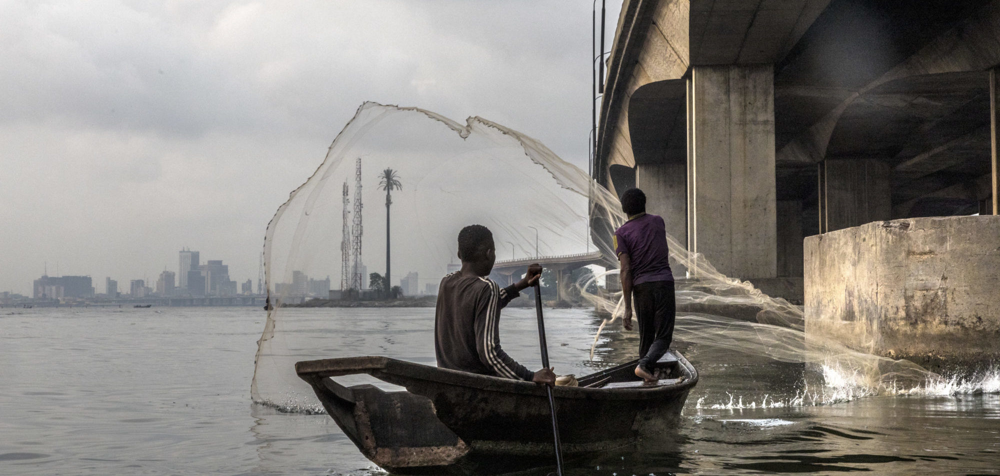
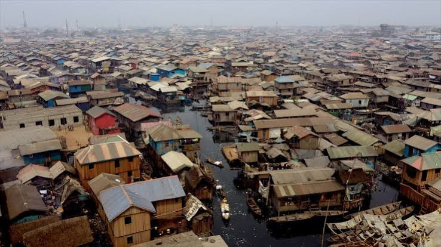
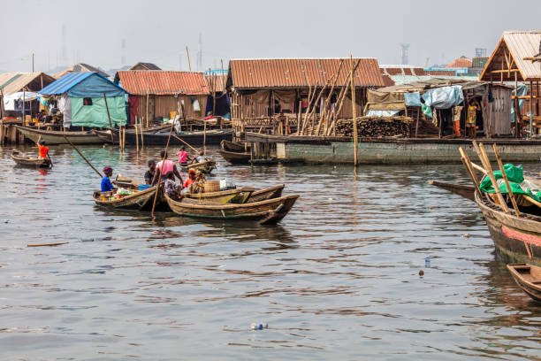
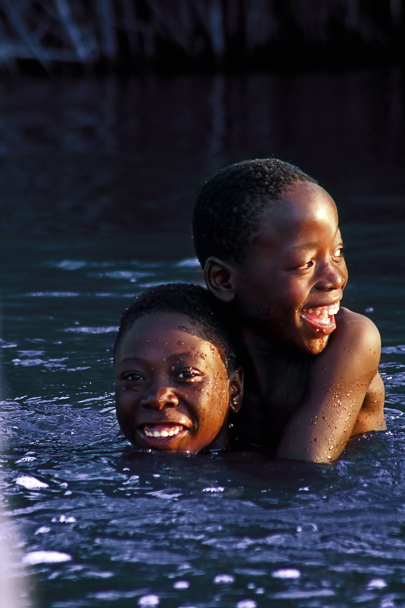

01 — THE LAGOON
Life beside the water.
Discover the relationship between the waterways, the buildings and the surrounding environment.
Discover the waterways, homes, movement and everyday environments that make Makoko a distinctive part of Lagos. Look closer and explore the community beyond the familiar images.
Explore the wider area around Makoko and its relationship with the Lagos Lagoon.
Makoko is a waterfront community in Lagos, Nigeria. Its waterways are part of everyday movement, work and the environment in which residents live.
The lagoon is part of the setting, the movement and the everyday experiences of the waterfront.
Discover the relationship between the waterways, the buildings and the surrounding environment.

Daily activities connected to the lagoon.

Homes beside the lagoon.
A closer look at some of the activities and environments visitors may encounter in the community.

Fishing is closely connected to the lagoon and the livelihoods of many waterfront residents.

Water transport provides an important way of moving through parts of the waterfront community.

The waterfront settlement has a distinctive relationship with the lagoon and the surrounding city.
Makoko is not simply a collection of waterfront buildings. It is a community where people live, work, raise families, trade and build relationships.
This Explore page focuses on the physical environment: what you can see, where things are and how the water connects different parts of the community.
A visual glimpse of the waterfront, homes and everyday life.

Find visitor information and send an inquiry through our Visit page. Plan ahead and arrange appropriate local guidance before your visit.